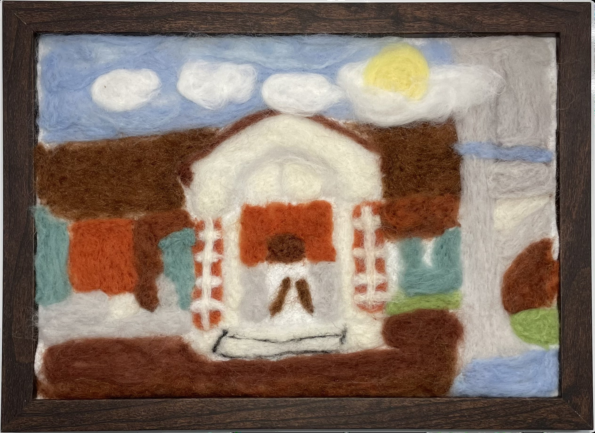

作品名稱：彰女炒雞蛋
作者姓名：陳慧安
作品主題：明朗的天空，紅樓在陽光下散發著鮮豔的光芒，展現著多年的淬鍊
作品敘述：讓作品看起來飽和的戳法以及鮮豔的顏色，充分展現出活力和活潑的氣質。畫中的紅樓是主角，搭配上方的雲朵和太陽。順帶一提，題目中的炒雞蛋是那顆黃黃的小太陽。
The dense felting technique and vibrant colors make the artwork look rich and saturated, fully showcasing its lively and energetic character. The red building in the painting takes center stage, complemented by the clouds and the sun above. By the way, the "scrambled egg" in the title refers to the small, bright yellow sun.